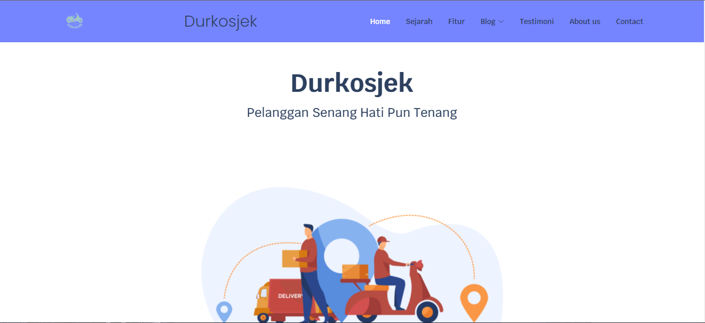
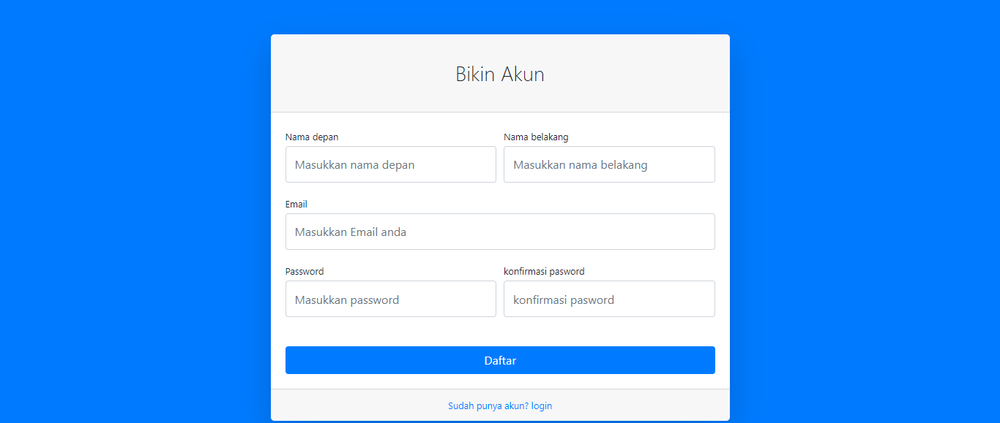
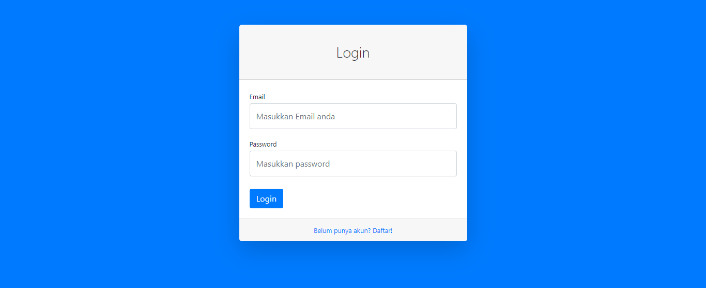
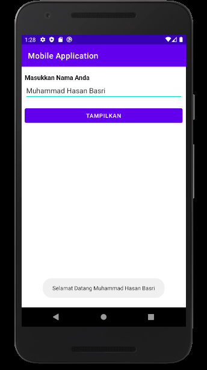
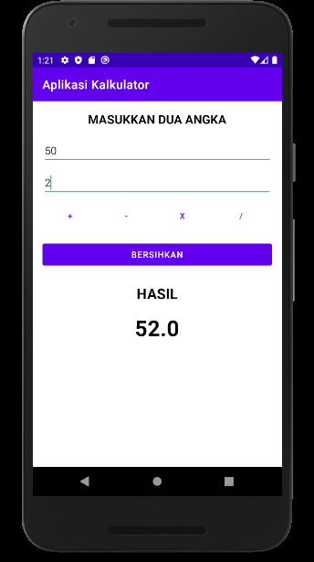
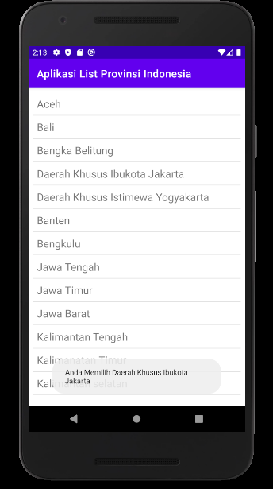

Cara simpan sebagai PDF: Tekan Ctrl+P, pilih Destination/Printer → Save as PDF, lalu klik Save.
Banner ini otomatis hilang saat dicetak/di-PDF-kan.
Muhammad Hasan Basri
📞 085156705827
✉️ 03hasanbjm@gmail.com
🔗 linkedin.com/in/muhammad-hasan-basri-8b120b180
🌐 hsanbsri.github.io
Lulusan S1 Teknik Informatika dengan pengalaman sebagai Full Stack Developer, Web3 Developer, Asisten Laboratorium,
dan Mentor Cloud Computing. Berpengalaman mengembangkan aplikasi web menggunakan Laravel, Next.js, PHP, JavaScript,
dan MySQL, serta memiliki kemampuan administrasi Linux, virtualisasi, deployment aplikasi, troubleshooting perangkat
keras dan jaringan, serta pengelolaan infrastruktur berbasis blockchain. Terbiasa bekerja individu maupun tim, dengan
kemampuan analisis dan pemecahan masalah yang baik.
Pendidikan
Institut Teknologi Perusahaan Listrik Negara — Jakarta Barat
Sep 2020 - Aug 2024
Bachelor of Teknik Informatika, IPK 3.92/4.00
- Asisten Laboratorium — Intelligent Computing & Software Engineering Laboratory
- Anggota Google Developer Student Clubs (GDSC)
Pengalaman Kerja
CODERO — BanjarmasinFeb 2026 - Sekarang
Teacher Coding and Robotics
- Mengajar pemrograman dan robotika kepada siswa SD, SMP, dan SMA menggunakan Project-Based Learning.
- Membimbing siswa pada computational thinking, algoritma, logika pemrograman, dan problem solving.
- Menyiapkan modul praktikum, latihan pemrograman, dan evaluasi sesuai level peserta didik.
- Membina siswa hingga meraih Silver Medal di International Junior Informatics Olympiad (IJIO).
Flo Playstation — BanjarmasinNov 2024 - Jan 2026
Full Stack Developer
- Mengembangkan dan memelihara aplikasi web penyewaan PlayStation menggunakan Laravel, PHP, JavaScript, MySQL.
- Mendesain dan mengimplementasikan fitur frontend & backend untuk reservasi dan pengelolaan data.
- Membangun dan mengintegrasikan REST API antar modul aplikasi.
- Melakukan deployment, konfigurasi, dan pemeliharaan aplikasi pada lingkungan cPanel.
Bangkit Academy led by Google, Tokopedia, Gojek & Traveloka — BandungFeb 2024 - Jan 2025
Mentor Cloud Computing
- Membimbing lebih dari 20 peserta mempelajari konsep Cloud Computing dan implementasi Google Cloud Platform (GCP).
- Mendampingi proses pengembangan dan deployment aplikasi berbasis cloud.
- Melakukan evaluasi tugas dan memberikan umpan balik teknis kepada peserta.
Direktorat Jenderal Pendidikan Tinggi, Riset dan Teknologi Kemdikbudristek — JakartaAug 2023 - Dec 2023
Web3 Developer
- Mengembangkan decentralized application (dApps) menggunakan Next.js dan React.js terintegrasi jaringan blockchain.
- Mengembangkan, menguji, dan mengimplementasikan smart contract menggunakan Solidity.
- Mengonfigurasi dan mengelola Ethereum Private Network menggunakan Geth pada lingkungan Linux (WSL).
- Memanfaatkan Docker untuk containerization layanan blockchain.
Flo Playstation — RemoteMar 2023 - May 2023
Fullstack Developer
- Mengembangkan aplikasi web penyewaan PlayStation menggunakan CodeIgniter, PHP, JavaScript, Bootstrap, MySQL.
- Merancang fitur autentikasi, pengelolaan data, dan antarmuka pengguna responsif.
- Melakukan deployment aplikasi menggunakan cPanel.
Bricks Entertainment — JakartaFeb 2022 - May 2022
Fullstack Developer
- Mengembangkan website sekolah berbasis web, mendesain database dan fitur administrasi.
- Mengimplementasikan tampilan responsif serta deployment dan maintenance.
Institut Teknologi PLN — JakartaAug 2021 - Feb 2024
Asisten Laboratorium — Intelligent Computing & Software Engineering
- Membimbing praktikum Pemrograman Web, Basis Data, Machine Learning, Image Processing, OOP, dan Python.
- Menginstal, mengonfigurasi, dan memelihara sistem operasi Linux pada komputer laboratorium.
- Mengelola lingkungan virtualisasi menggunakan VirtualBox untuk pengujian dan simulasi sistem.
- Troubleshooting perangkat keras, perangkat lunak, dan jaringan komputer laboratorium.
- Teknologi: Linux • VirtualBox • Networking • Python • Java • C# • MySQL
Pengalaman Organisasi
Google Developer Student Clubs ITPLN — JakartaOct 2023 - Jul 2024
Developer Community
- Berkontribusi dalam kegiatan komunitas teknologi topik Cloud Computing dan Flutter Development.
- Membantu penyusunan materi, workshop, dan sesi berbagi pengetahuan teknis.
Keahlian Teknis
Laravel
Next.js
React.js
PHP
JavaScript
MySQL
Linux Administration
Virtualization (VirtualBox)
Docker
Solidity / Web3
Google Cloud Platform
Networking & Troubleshooting
Python
Java
C#
Sertifikasi & Pencapaian
- Microsoft Certified: Azure AI Fundamentals (2023)
- Microsoft Office Specialist: Word Associate (2023)
- Belajar Dasar Pemrograman Web — Dicoding (2023)
- Belajar Membuat Aplikasi Web dengan React — Dicoding (2022)
- Menjadi Google Cloud Engineer — Dicoding (2023)
- Belajar Dasar-Dasar DevOps — Dicoding (2023)
- Belajar Membuat Aplikasi Back-End untuk Pemula dengan Google Cloud — Dicoding (2023)
- Responsive Web Design — FreeCodeCamp (2021)
- Mobile Programming — Digitalent Kominfo (2021)
Portofolio Proyek
Flo Playstation — Rental PlayStation Web App
Aplikasi web penyewaan PlayStation berbasis Laravel, PHP, JavaScript, dan MySQL dengan REST API dan deployment cPanel.
Web3 dApp — Decentralized Application
Aplikasi terdesentralisasi dengan Next.js/React.js terintegrasi Ethereum Private Network dan smart contract Solidity.
Durkosjek & Sistem Informasi Donor Konvalesen
Proyek web informasi dan pencarian layanan berbasis web (kompetisi Gemastik & pengembangan mandiri).


Sistem Backend — Autentikasi & Manajemen Data
Modul backend PHP/MySQL: registrasi, login, dan manajemen data.


Aplikasi Mobile — Input & Kalkulator
Proyek mobile programming (Java/Kotlin, Android Studio) dari pelatihan VSGA Kominfo.


